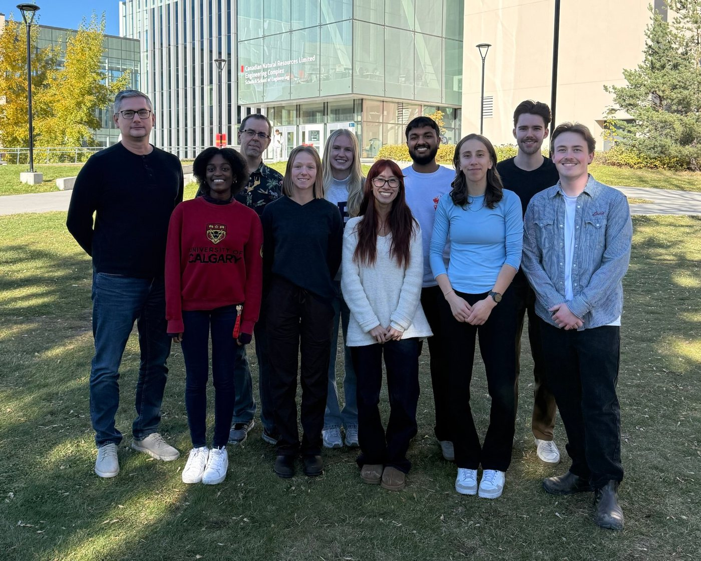

Derksen Research Group
We are a team of organic chemists interested in atropisomerism, the synthesis and reactivity of heterocycles, and applications of our molecules to areas of unmet medical need.
Department of Chemistry, University of Calgary

Research
More about our researchWe aim to make biologically useful molecules using modern synthetic methods, with a particular focus on proteins involved in cancer and pain.


Join the group
We are always looking for new graduate students with an interest in using synthetic organic chemistry to explore biological questions. Undergraduates can join for honours or summer projects.
Open positionsSupport our research
Donations through the University of Calgary help fund our work. Mention the Derksen group in the comments when you donate.
Ways to give